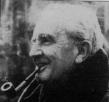

Saturday, January the 1st, 2005
back to: title, date or indexes
One of the more lamentable episodes in Dobson's career was the year he wasted trying to write a Tolkeinish fantasy novel. What on earth got into him? It was the year Fulgencio Batista fled Cuba, that Alaska and Hawaii joined the United States, that Archbishop Makarios returned to Cyprus from exile; the year of a royal wedding in Belgium and of the so-called kitchen debate between Nikita Krushchev and Richard Milhous Nixon. It was the year which saw the debut of Rod Serling's Twilight Zone, but also, in February, the day the music died. John McEnroe, Jens Stoltenberg, Max Décharné and Magic Johnson were born during that twelvemonth, while Frank Lloyd Wright, Mario Lanza, and Blind Willie McTell all perished.
And all the while Dobson was holed up in a hut in some Arctic wasteland, writing something to which he gave the working title Phantasmal Quest Thing. It is anybody's guess why he tried to write fantasy fiction. He had no feel for the genre. The reader will find here no elves, hobbits, or wizards—just fleas and flies. Dobson seemed to think he could build a thousand-page epic around a flea called Dave. The other characters—if such they can be called—have equally prosaic names. Instead of, say, Aragorn, Legolas and Gandalf we get Keith, Colin, Sue and Geoff. In place of adventures, we get these barely-anthropomorphised insects—accompanied by a few midges, ticks and bluebottles—flying and leaping around the place engaged in conversations which report on action sequences that are never themselves described.

Tolkein : witless twaddle
It is a soulless and tedious work, and it is best to draw a veil over Dobson's habit, during that year, of dressing in cardigans and tweeds, hanging around in taverns drinking warm beer, and spouting politically reactionary drivel as a way of ingratiating himself with the fantasists he modelled himself upon. Let us just be thankful that Marigold Chew snapped him out of it. On the twelfth of October 1959 she bundled him on to a boat, locked him in the cabin, and, through a coded system of knuckle-raps on the door, threatened him with a big fierce sword-wielding pneumatic robot dervish. It was a turning point in his career.
Hooting Yard on the Air, January the 5th, 2005 : “Me and My Thorn-hog” (starts around 11:49)